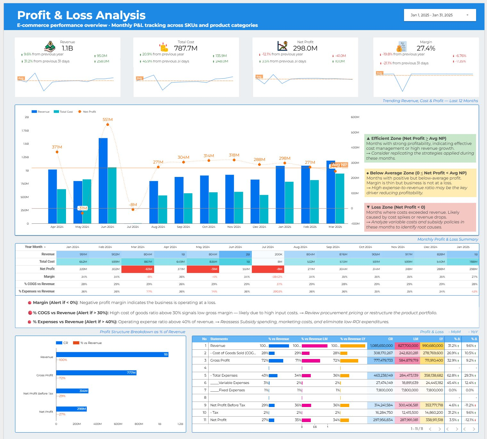
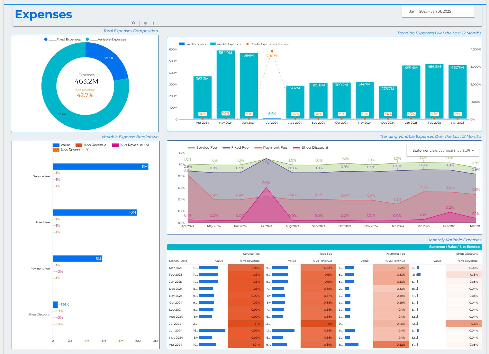
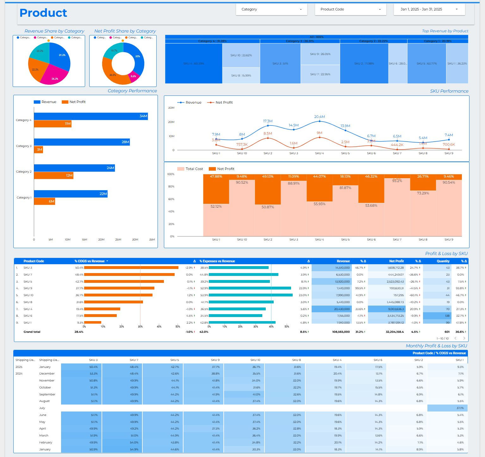
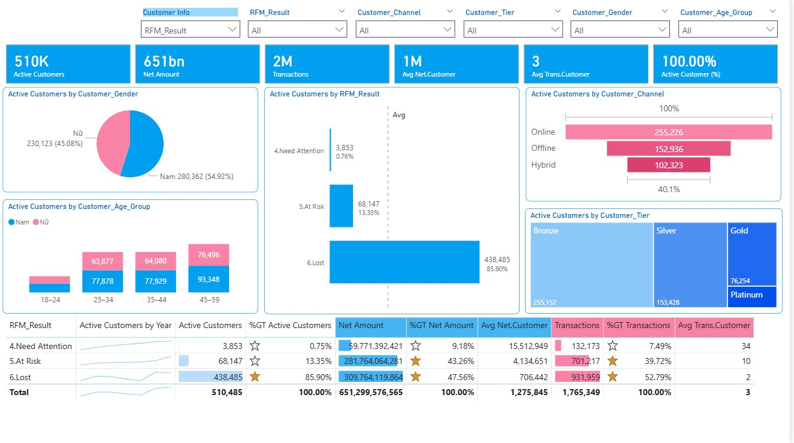

Business Intelligence Analyst & Analytics Engineer with 5 years of experience at VTA Company, delivering consulting-driven BI and AI solutions across diverse freelance projects in both domestic and international markets. Specialized in designing end-to-end data systems — from ETL pipelines and scalable data models to executive dashboards and AI-powered analytics — supporting decision-making from team to company level.



Automated 3-page P&L reporting system for an e-commerce seller — covering financial overview, expense breakdown, and SKU-level product performance. Connected Google Sheets to Looker Studio with 13 months of data, dynamic date filters, and color-coded alerts.

Customer segmentation using the RFM model (Recency, Frequency, Monetary) across 510K active customers. Built with dbt on Databricks for data transformation and Power BI for interactive visualization — enabling targeted retention and marketing decisions.